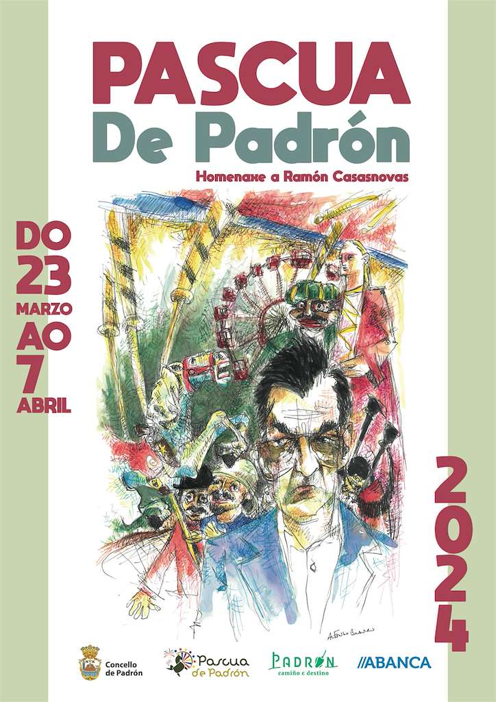
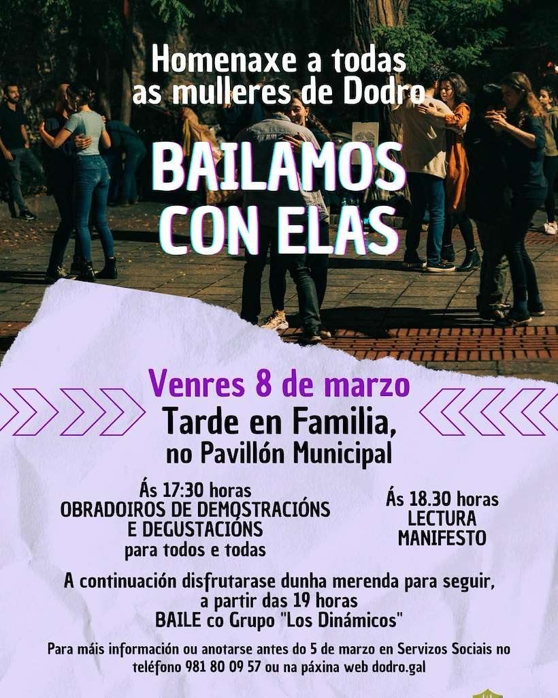
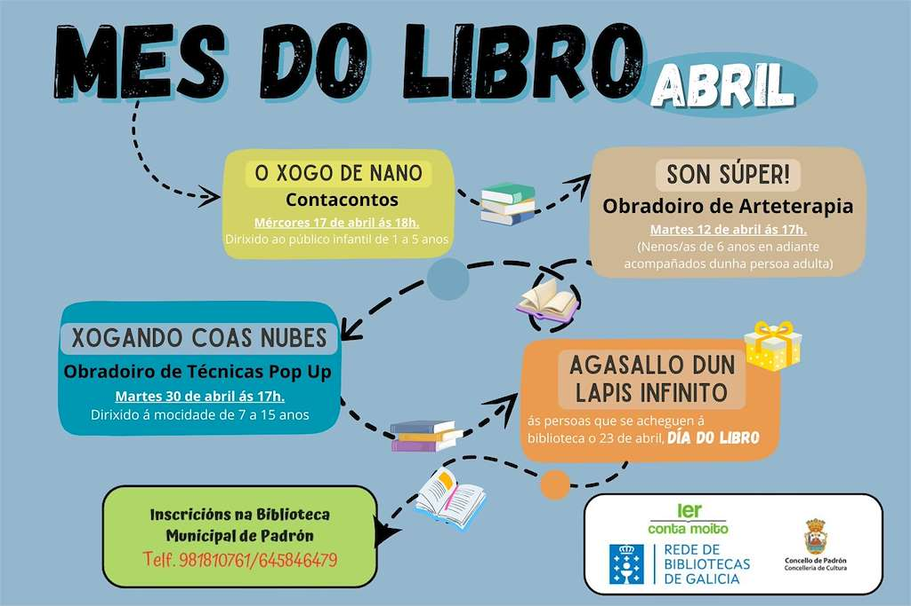

Sitios de interese en Padrón
Ver máis

Reformada por última vez no século XIX, conserva elementos de templos anteriores dos séculos XII e XV nos seus grosos muros. A entrada polo Paseo do Espolón mostra unha inscrición que lembra o templo construído polo arcebispo Xelmírez en 1133.
Padrón
- Padrón 10K
- Entroido de Extramundi
- Entroido
- Día de Rosalía de Castro
- Gala Rosalía Foliadeira
Padrón 10K

Na localidade de Padrón acollerá a celebración de unha nova edición de este evento deportivo. A proba atlética estará formada por varios circuitos de diferentes distancias que deberá completar os participantes en función das suas idades, sendo a distancia mínima de 60 metros e a máxima de 10 kilómetros.
Entroido de Extramundi

Na asociación de Mulleres Rurais A Carballeira de Padrón, organiza a tradicional festa de Entroido, que terá lugar na Casa da Cultura de Extramundi. Todos os asistentes poderán degustar productos típicos de estas festas e participar no sorteo de regalos.
Entroido

Na localidade Padrón celebrará a popular festa de Entroido. Veciños e visitantes, nenos e maiores poderán desfrutar e deleitarse nesta xornada co tradicional Desfile e Concurso de Disfraces, Carrozas e Comparsas.
Día de Rosalía de Castro

O municipio de Padrón recordará a figura de Rosalía de Castro cun intenso programa cultural. Entre as actividades cabe destacar unha visita teatralizada, a tradicional ofrenda de entrega do Premio de Poesía Rosalía de Castro.
Gala Rosalía Foliadeira

A asociación Cultural Rosalía de Castro na localidade de Padrón organizará unha nova edición da Gala Rosalía Foliadeira, donde os asistentes poderán disfrutar de diferentes actuacions musicais.
Dodro
- Entroido
- Día de Rosalía
Entroido

Os veciños do municipio de Dodro celebrarase a popular festa do Entroido con unha divertida xornada carnavalescas na que haberá animación musical,degustación de postres típicos e sorteos.
Día de Rosalía

O municipio de Dodro recordará a figura de Rosalía de Castro con unha programación especial para conmemorar a sua vida e obra.
Rois
- A Candelaria de San Lourenzo de Seira
- Cocido de Entroido de Urdilde
- Entroido
- Entroido de Urdilde
- Día de Rosalía
- Xantar de Servia
A Candelaria de San Lourenzo de Seira

A parroquia de San Lourenzo de Seira celebrará a sua festa relixosa en honra á Virxe da Candelaria. Veciños e visitantes poderán disfrutar dos actos litúrxicos programados para a ocasión e deleitarse con variadas actuacións musicais.
Cocido de Entroido de Urdilde

O evento terá lugar no municipio coruñes de Rois, no pavillón de Rois. Está clasificado dentro da categoría Gastronómica.
Entroido

O municipio de Rois festexa a popular festa de Entroido coa celebración do Concurso de Disfraces
Entroido de Urdilde

Os veciños da parroquia de Urdilde, no municipio de Rois, celebrarán a popular festa do Entroido con unha gran xornada carnavalesca que culminará con unha gran verbena.
Día de Rosalía

O municipio de Rois ten programadas unha serie de actividades para homenaxear a figura e obra de Rosalía de Castro
Xantar de Servia

A comisión Serviafest organiza un xantar e baile no restaurante Casa Benjamín en Vilachán.
Padrón
- Xornadas Gastronómicas da Lamprea
- Día Internacional da Muller
- Mercadillo Recambios de Motos e Coches Clásicos
- Festas da Pascua
- Exposición da Camelia e do Bonsai
- Carreira Popular de Pascua
- Feira Cabalar Campo da Barca
Xornadas Gastronómicas da Lamprea

Nova edición de estas xornadas gastronómicas de exaltación da lamprea que terán lugar en Padrón. Os asistentes a este evento gastronómico poderá degustar os locales colaboradores menús elaborados para a ocasión.
Día Internacional da Muller

O municipio de Padrón organizará diferentes actos en conmemoración ao Día Internacional da Muller.
Mercadillo Recambios de Motos e Coches Clásicos

O pabellón Polideportivo do Souto acollerá a celebración de este mercadillo de recambios donde se poderán adquirir piezas de coches e motos clásicas.
Festas da Pascua
A Pascua de Padrón é a festividade mais importante do municipio. Non faltan en estas festas as grandes verbenas a cargo das orquestas do momento, os actos relixosos, actividades deportivas e a tradicional Feira Cabalar.
Exposición da Camelia e do Bonsai

Esta exposición celebrarase no municipio de Padrón. Os asistentes a esta exposición que se levará a cabo no Convento do Carme, poderá disfrutar de unha gran mostra floral donde esta flor tan típica de Galicia será xunto ao bonsai, a gran protagonista.
Carreira Popular de Pascua

Nova edición de esta carreira que se disputará na localidade de Padrón. A carreira estará formada por varios circuitos que deberán completar os participantes en función das suas idades. A salida da carreira popular da pascua estará ubicada na praza de Macías.
Feira Cabalar Campo da Barca

Tradicional feira cabalar que se celebrará durante a Pascua de Padrón. O evento levarase a cabo no campo da Barca o Domingo 31 de Marzo a partir das 09.30 horas e numerosos cabalos e eguas participaran nos distintos concursos programados que darán comezo as 10.00 horas.
Dodro
- Día Internacional da Muller
Día Internacional da Muller
O concello de Dodro ten programados unha serie de actos con motivo do Día Internacional da Muller.
Rois
- Día Internacional da Muller
Día Internacional da Muller

O concello de Rois organizará unha xornada na que se conmemorará o Día Internacional da Muller
Padrón
- Clásica de Pascua
- Festival de Bandas Capital do Sar
- Mes do Libro
- Andaina Bisbarra do Sar
- Día da Memoria Democrática Padronesa
Clásica de Pascua

Nova edición de esta clásica ruta ciclista que se celebra durante as grandes Festas da Pascua padronesa. A clásica de Pascua discurrirá polo municipio de Padrón.
Festival de Bandas Capital do Sar

O municipio de Padrón acollerá, no mes de Abril a nova edición do Festival de Bandas Capital do Sar. Os asistentes a este evento poderán disfrutar e deleitarse coas actuacions musicais de diferentes bandas que se darán cita en esta nova edición do festival.
Mes do Libro
Padrón celebrará o Mes do Libro con unha programación que se levará a cabo ao lago de varios día na Biblioteca Municipal, dirixida a pequenos e xóvenes de entre 1 e 15 anos.
Andaina Bisbarra do Sar

Nova edición da Andaina Bisbarra do Sar que se celebra entre os municipios de Padrón,Dodro e Rois. A proba poderá realizarse camiñando ou correndo. A competición terá o seu punto de partida na vila de Padrón.
Día da Memoria Democrática Padronesa

O concello de Padrón celebrará o Día da Memoria Democrática Padronesa. O acto terá lugar no Xardín Botánico Artístico e o seu obxectivo e o reconocemento a todas aquelas personas que loitaron pola libertade durante a guerra civil e a dictadura franquista.